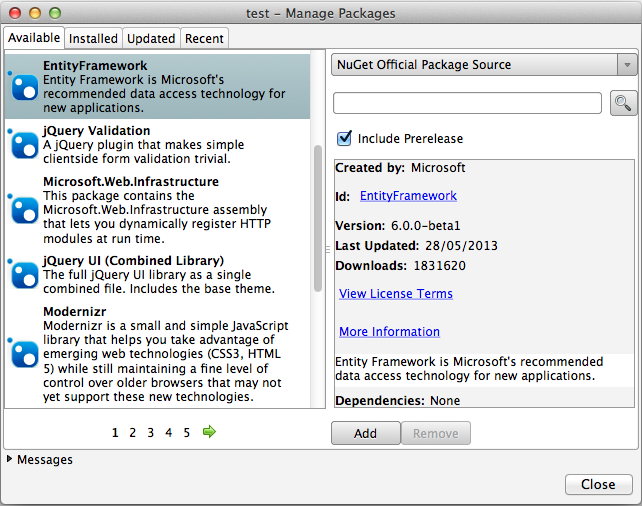
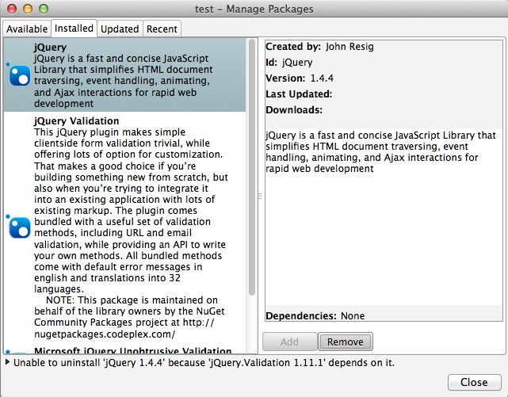
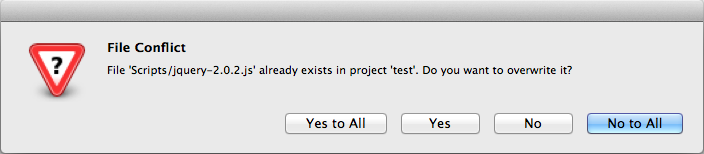

MonoDevelop NuGet Addin 0.5
New Features
- NuGet 2.6 support.
- Support for prerelease packages.
- Support for packages using XML Document Transformations (XDTs).
- File conflict dialog when installing a package that is trying to add files that already exist in the project.
- Installation errors now displayed in the Manage Packages dialog.
- Support for packages that include MSBuild targets and properties files.
- Support for accessing authenticated feeds.
- Update All button added to Manage Packages dialog so all packages can be updated in a project or solution in one step.
- Package title displayed in the list of packages instead of the package id. The package id displayed when a package is selected on the right hand side of the dialog.
Now let us take a look at some of these new features in more detail.
Prerelease packages
The Manage Packages dialog now has an Include Prerelease check box which when checked will allow you to search for and install prerelease packages. In the screenshot below the Entity Framework prerelease package has been selected.

XML Document Transformations
NuGet 2.6 added support for XDTs. This allows complex transformations of a project’s app.config or web.config when a NuGet package is installed or uninstalled. In the NuGet package you can add XDTs by using naming your file after one or more of the following:
- web.config.install.xdt
- web.config.uninstall.xdt
- app.config.uninstall.xdt
- app.config.uninstall.xdt
These files should target the content folder so in your .nuspec file you should have something similar to:
<files>
<file src="MyTransforms\*.xdt" target="content" />
</files>
Further information on XDTs is available on the MSDN.
Manage Package Error Messages
When an error occurs on installing, updating or uninstalling a package the error message is now shown in the dialog instead of being hidden in the expandable messages section. In the screenshot below an error is shown when trying to uninstall jquery when another package depends on it.

Authenticated NuGet Feeds
You can now browse and install packages from authenticated NuGet feeds that use basic authentication and Windows authentication. Currently there is no login dialog but you can add your username and password to your NuGet.config file.
To add your username and password to your NuGet.config file you will need to use NuGet.exe and run the following command, replacing the feed name, username and password with the correct values.
mono --runtime=v4.0.30319 NuGet.exe sources update -name FeedName -username user -password pass
Note that if you are using a version of Mono older than version 3.0.12 then you will need to use a custom build of NuGet.exe otherwise you will get an InvalidOperation error message “This XmlWriter does not accept Text at this state Prolog.” when running the above command. The custom build of NuGet.exe is available on GitHub as well as the source code.
After adding your username and password to NuGet.config you will need to restart Xamarin Studio since the information held in the NuGet.config file is cached.
File Conflict Dialog
NuGet 2.6 will now check for existing files in your project that match those being installed by a package. If there is a match then a dialog will be displayed so you can decide whether to overwrite the files.

Bug Fixes
Duplicate assembly references when installing a package is now fixed. References to assemblies in a project that use the qualified assembly name, such as:
NUnit.Framework, Version=2.6.2.0, Culture=neutral, PublicKeyToken=8cc8392e8503e009
were not being removed and re-added when installing a NuGet package that included that reference.
Download
The source code for the addin is available on GitHub.
The addin is also available to download from a custom MonoDevelop repository.